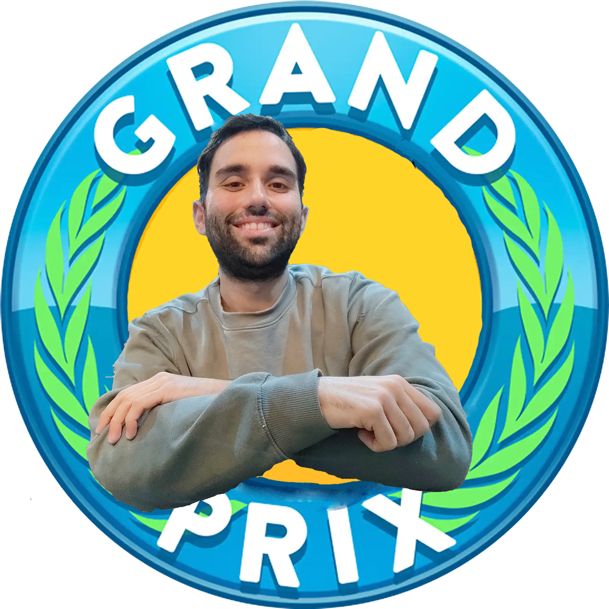

Es troba al menú d'inici del Grand Prix de reis.
Premi el botó de jugar per començar.
NORMES
- Si us plau, llegeix i segueix amb cura tot el que he s'especifica i es mostra en aquest joc (pensa que el desenvolupament d'aquesta web m'ha dedicat forces hores).
- No silenciïs el mòbil. La música que he posat a cada prova donarà ritme, gràcia i gresca al joc.
- Durant el transcurs de la gimcana t'hauràs de moure per casa. Si us plau, no vagis com un boig. Tingues cura de l'espai on estiguis i evita desendreçar o malbaratar quelcom trobis al teu pas. Després d'acabar on estiguis, deixa tot com l'has trobat.
- No et saltis passos del joc. Si buscant una pista es donés el cas que trobessis una altre que fos posterior, no l'agafis. Si us plau, segueix l'ordre.
- Completa cada tasca abans de passar a la següent pista.
- I, sobretot, gaudeix del joc :)
INSTRUCCIONS
- El funcionament del joc es igual al d'una gimcana. Aquesta l'hauràs de fer amb el mòbil. Per això hauràs de trobar les 13 codis QR que hi han arreu de la casa.
- Aquestes QR seràn pistes i t'aniràn portant a diferents punts de la casa que t'aproparan cada cop més al teu regal final.
- En alguna d'aquestes pistes hauràs de superar alguna prova que trobaràs sobre la marxa.
- Estigues atent a aquestes pistes! Cada una d'elles et donen informació a dues bandes: una, la que necessitaràs per trobar el teu regal; i dos, informació que subtilment t'anirà definint què és el teu regal.
- El regal final el trobaràs quan trobis totes les pistes, superis les proves a les que t'afrobtis i arribis al punt final del joc.
- Cada pista que trobis (cada codi QR) hauràs d'agafar-la i donar-me-la a mi. Cada una que em donguis, et sumarà 20 punts. El teu objectiu és arribar als 200 punts.
- Ah! Alerta! Ahir a la granja del costat se'ls hi va escapar un "pavo" i volta per la casa. Evita trobar-te'l! El que farà és allunyar-te del teu regal i et treurà 10 punts. Allunya't!.
- Per començar a jugar, Islàndia has de rememorar. Allà, en un rectangle el color es va capturar i el temps es va aturar.